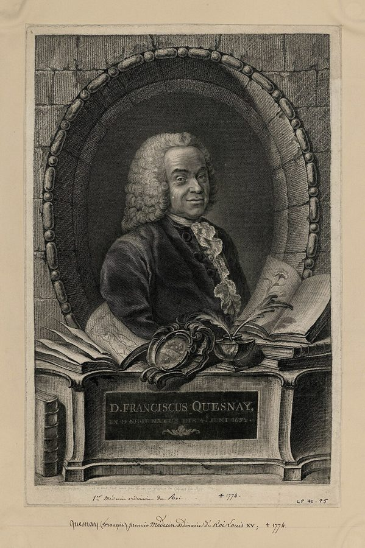
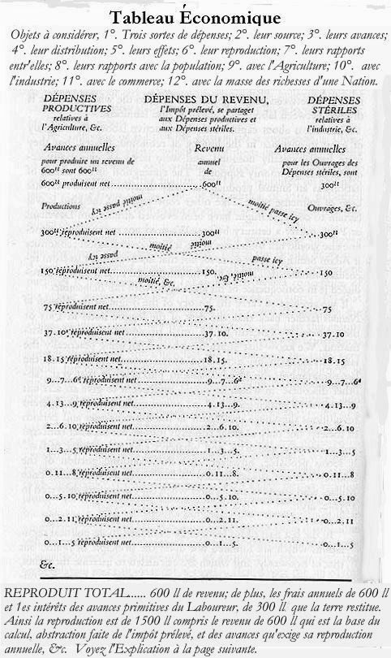

这一页在做什么
卷四最后一章。斯密用前八章拆重商主义，这一章转向另一套主张：法国一群学者说，只有土地才产生真正的剩余，工匠和商人什么也没增加。斯密对他们客气得多，还说这套学说也许是最接近真理的。章末他把整个卷四收成一段话：拆掉一切特惠和限制，剩下的就是「天然自由的制度」，君主只剩三项义务。读的时候抓两条线：斯密和重农派哪里一致、哪里分手；三项义务到底给政府留了多大地方。

他想证明什么
这一章要证明两件事。第一件：重农主义错在把工商业者说成不生产的，可它比重商主义高明，因为它知道财富是每年生产出来、被消费掉的东西，不是金银，还主张完全的自由。斯密先讲来历：柯尔贝尔为扶持城市工商业压低农业，法国的哲学家们就把竿子往另一边扳。接着用二十多段转述魁奈的体系（第 5–27 段），这些都是「重农派认为」，不是斯密的话；然后挑出它的根本错误，给出五条反驳。第二件才是全卷的落点：不管扶的是工商业还是农业，一切特惠和限制都事与愿违（第 48–50 段）；全都撤掉，「明白而简单的天然自由的制度」就会自己建立（第 51 段）。
读法：§5 是先读，不到一千词，第 51 段一定要读。有空再读 §1 的柯尔贝尔和 §3；§2 的转述和 §4 的中国、埃及可以跳过。
「天然自由」常被说成「自由放任」（laissez-faire），可后一个词全书一次也没出现；斯密给君主留了三项义务，第三项并不小。
斯密落在哪：重农派把工商业说成不生产的，错了，但它是迄今也许最接近真理的学说。偏向哪一行的特惠和限制都拖慢国家致富；全撤掉，天然自由的制度就自己建立，君主卸下指挥私人产业这件谁也办不好的事，只剩国防、司法、公共工程和公共机构。
分节地图
这一页是卷四第 9 章，本站切成 5 节。粗体是本站起的节名；「杨译里找」后面是杨译里这一节开头附近的小标题或第一句；灰色的英文是原文这一节开头的几个词。标「先读」的是最短读法。
- 柯尔贝尔和弯过头的竿子重农主义体系不需要像对重商主义那样长的说明THE agricultural systems of political œconomy will …第 3 段是柯尔贝尔的速写：正直勤勉、精于账目，却照管衙门的办法管全国工商业，还禁止谷物出口。第 4 段一句俗话交代了重农派的来历。
- 三个阶级和《经济表》他们将对一国土地和劳动年产物…The different orders of people who have …全是转述魁奈：三个阶级、净产物、经济表，抽象又多术语。结论一句话就够：他们也主张完全的贸易自由（第 24 段）。可以跳过，第 12 段织花边的例子值得一看。
- 魁奈这位空想的医生尽管有造成伤害的规章，国家仍能繁荣Some speculative physicians seem to have imagined …第 28 段空想的医生；第 29–37 段五条反驳，第 30 段的婚姻最妙；第 38 段「也许是最接近真理的」，还有米拉波侯爵的「三大发明」。
- 中国、埃及和古代奴隶有些国家重视农业As the political œconomy of the nations …中国、古埃及、印度、古希腊罗马怎样重农抑商，多是二手传闻。第 40 段「你们那可怜的商业！」、第 47 段奴隶很少发明可以看看，其余可以跳过。
- 天然自由的制度每一种提高制造品价格的事情，都会挫抑农业The greatest and most important branch of …整个卷四的结论。第 48–50 段：扶哪一行都事与愿违；第 51 段：天然自由的制度和三项义务；第 52 段预告卷五的三章。
先用中文过一遍：这一页的概念
这一页用到的两个概念。讲的是概念本身；每块的「今天」说今天怎么看它。斯密反驳重农派时用的是页 12 的生产性与非生产性劳动，卷四前八章驳的是页 16 的重商主义。
§2重农主义 the agricultural systems; the Œconomists
18 世纪中叶法国的一个学派，领头的是宫廷医生魁奈（Quesnay），当时自称「经济学家」，后人叫他们 physiocrats，意思是「自然的统治」。他们的核心说法是：一年下来，只有种地能在收回全部成本之后多出一块「净产物」，落到地主手里成了地租；工匠、制造业者和商人只是把自己吃掉的价值再造出来，是「不生产的阶级」。从这里推出的政策却很开明：农业不该受压，谷物应自由买卖，对外国商人也该给完全的贸易自由。别和重商主义混在一起：重商派盯着金银和顺差，重农派盯着每年的产出，两边恰好相反。译本：「重农主义体系」
今天：「只有农业生产剩余」早被推翻，今天各行各业的增加值都算进国民收入。留下来的是两样：财富是每年的产出流，以及魁奈《经济表》里各阶级之间循环往来的那张账。
在这一页：第 2 段说它从未被哪国采用，第 5–27 段转述，第 29–37 段反驳，第 38 段评价。
§5天然自由的制度 the obvious and simple system of natural liberty
斯密给全书的政策主张起的名字。意思是：国家不再用奖励、垄断、禁令把资本往哪一行推或者从哪一行赶，每个人只要不违反正义的法律，就可以照自己的办法谋利，拿劳动和资本跟任何人竞争。它有前提，也有边界。前提是法律和司法：「不违反正义」本身要靠国家去维持。边界是三项义务：国防，司法，兴建和维持私人办了不合算、对整个社会却划算的公共工程和公共机构。国家卸掉的，只有「监督和指引私人产业」这一件，斯密说这件事人类的智慧和知识再多也办不好。别和「自由放任」混为一谈：laissez-faire 这个词全书没有出现过。译本：「天然自由体系」
今天：今天多译「自然自由体系」。「政府不可能知道该把资本投向哪里」后来被 Hayek 发展成知识问题；第三项义务今天叫公共品。现代国家管的事远超三项，该不该，是政治上最大的争论之一。
在这一页：第 51 段，整个卷四的落点。第 52 段接着说，三项义务要花钱，卷五就讲花在哪、钱从哪来。
故事和背景
这一页里的故事和 18 世纪的东西，按在书里出现的顺序排。
§1柯尔贝尔和「让我们自己来」
第 3 段是一幅人物速写。路易十四的大臣 Colbert（杨译这一章作科尔培尔，页 17 讲过他引起的贸易战）正直、勤勉、精通细节，查账又老练又精明，天生是整顿国家收支的人才。可惜他接受了重商主义的全部偏见，像管衙门各部门那样管一个大国的工商业，给这一行特权、给那一行限制；为了让城里的粮食便宜、扶持制造业，干脆禁止谷物出口。斯密的意思很尖刻：一个管账的好手，正好最容易爱上管制。有个和他有关的传说，Keynes 1926 年的《自由放任的终结》里讲过：17 世纪末，Colbert 问商人「要怎样才帮得了你们？」，一位叫 Legendre 的商人答：「让我们自己做。」laisser faire 这句口号，传统上就追溯到这里。Keynes 也指出，这个词在斯密的书里找不到。
§2一便士亚麻，三十镑花边

重农派认为工匠什么也没增加，第 12 段斯密替他们举了个最直观的例子：一个织花边的人，能把也许值一便士的亚麻，变成值三十镑的一副精致袖口花边，看上去增值了七千二百倍。可照这一派的算法，这个人织这副花边也许要两年，三十镑只够还上这两年的口粮，全国的总产物一点也没多。他们还拿织花边的人大多极穷当证据。魁奈把这套账画成了上面这张表，钱在农民、地主、工匠之间来回流转。这张表后来有了意想不到的后人：1932 年，Wassily Leontief 刚到哈佛，就动手给美国做一张「经济表」，发展成投入产出分析，1973 年为此得了诺贝尔奖；Schumpeter 说，它恢复了魁奈表格方法的基本原理。
§3凡尔赛宫的夹层小屋
魁奈是路易十五的御医，先给国王的情妇蓬巴杜夫人看病，在凡尔赛宫里住一套夹层的小房间。据 Rae 1895 年的斯密传，斯密 1766 年在巴黎时，常和这一派在魁奈的房间里相聚；Rae 引当时的文人 Marmontel 回忆，国王有时会过来听魁奈讲经济的寓言，叫他「国王的思想家」。斯密在第 38 段笑这一派对老师的崇拜不亚于古代哲学家的门徒，还抄下了米拉波侯爵的话：自开天辟地以来，稳定政治社会的三大发明是文字、货币和《经济表》。斯密说魁奈本人「极其谦逊朴实」。Rae 还说，魁奈要是活到《国富论》出版，斯密本打算把这本书献给他；魁奈死于 1774 年。
§3Turgot 的二十一个月
第 38 段说，重农派的著作让法国农业摆脱了几种压迫：租约有效期从九年延长到二十七年，谷物在各省之间自由运输，出口也成了常规。斯密在巴黎还常见到 Turgot（1727–1781），他和重农派走得很近，1766 年写成《关于财富的形成和分配的考察》。1774 年 8 月他当上财政总监，一上任就放开国内谷物贸易，偏偏碰上歉收，1775 年春爆发了「面粉战争」，他靠军队和限价才压住。1776 年初他又提出六道敕令，废除劳役和行会。反对他的人越来越多，1776 年 5 月 12 日他被罢免，几周之内新政大多被撤销。这时《国富论》出版（1776 年 3 月 9 日）才两个月。
原典：斯密的原话
这本书是公版书，下面整段放斯密的原文，配本站的白话译。灰字说它在杨译的哪里，最后一行是这段里今天容易读错的 18 世纪词。
§3空想的医生
第 28 段，略去中间两句讲人体的话。理解斯密的关键段落：他不追求完美的制度。在杨译尽管有造成伤害的规章，国家仍能繁荣这个小标题下面。
Some speculative physicians seem to have imagined that the health of the human body could be preserved only by a certain precise regimen of diet and exercise, of which every, the smallest, violation necessarily occasioned some degree of disease or disorder proportioned to the degree of the violation. … Mr. Quesnai, who was himself a physician, and a very speculative physician, seems to have entertained a notion of the same kind concerning the political body, and to have imagined that it would thrive and prosper only under a certain precise regimen, the exact regimen of perfect liberty and perfect justice. He seems not to have considered that in the political body, the natural effort which every man is continually making to better his own condition, is a principle of preservation capable of preventing and correcting, in many respects, the bad effects of a political œconomy, in some degree both partial and oppressive. Such a political œconomy, though it no doubt retards more or less, is not always capable of stopping altogether the natural progress of a nation towards wealth and prosperity, and still less of making it go backwards. If a nation could not prosper without the enjoyment of perfect liberty and perfect justice, there is not in the world a nation which could ever have prospered.
本站译：有些爱空想的医生似乎以为，人体要保持健康，只能靠一套精确的饮食和运动规矩，哪怕最小的一点违犯，也必然招来相应的病痛，违犯得越多，病得越重。……魁奈先生自己就是医生，还是个很爱空想的医生，他对政治的身体似乎也抱着同样的想法，以为它只有在一套精确的规矩下才会兴旺，那就是完全的自由加完全的正义。他似乎没有想到，在政治的身体里，每个人时时刻刻都在为改善自己的处境而作的那种自然的努力，就是一股自我保全的力量，在许多方面能预防、纠正那种多少有些偏心、有些压迫的经济政策带来的坏处。这样的政策无疑会或多或少拖慢一国走向富裕和繁荣的自然进程，却并不总能让它完全停下，更难让它倒退。要是一国没有完全的自由和完全的正义就不能繁荣，世上就从来没有一个国家繁荣过。
这段让人看清斯密不是空想家：他主张自由，却不认为非得完美的自由才行。限定词要留住：魁奈「似乎」这样想，坏政策「不总能」让国家停下，没说永远拦不住。
- speculative爱空想、好凭推理下结论的，不是「投机」
- regimen养生规矩：饮食、作息、运动的一套规定
- political œconomy这里指一国的经济政策，不是学科
- partial偏心的、偏袒的，不是「部分的」
§5天然自由的制度自己建立
第 51 段的前半，整个卷四的结论。在杨译可见，所有鼓励和限制的体系都阻碍社会进步这个小标题后面的第二段。
All systems either of preference or of restraint, therefore, being thus completely taken away, the obvious and simple system of natural liberty establishes itself of its own accord. Every man, as long as he does not violate the laws of justice, is left perfectly free to pursue his own interest his own way, and to bring both his industry and capital into competition with those of any other man, or order of men. The sovereign is completely discharged from a duty, in the attempting to perform which he must always be exposed to innumerable delusions, and for the proper performance of which no human wisdom or knowledge could ever be sufficient; the duty of superintending the industry of private people, and of directing it towards the employments most suitable to the interest of the society.
本站译：所以，一切特惠的体系、一切限制的体系，一旦这样被彻底撤掉，那个明白而简单的天然自由的制度就会自己建立起来。每个人只要不违反正义的法律，都可以完全自由地照自己的办法谋自己的利益，拿自己的劳动和资本，去和任何别人、任何一类人的劳动和资本竞争。君主也就彻底卸下了一项职责：想去尽这项职责，他必定总要陷进数不清的错觉；要把它尽好，人类的智慧和知识再多也永远不够。这项职责就是监督私人的产业，把它引到最合乎社会利益的行当上去。
注意前提「只要不违反正义的法律」，和卸下的只是一项职责。最后半句接页 17 的看不见的手：那里说政治家不该替私人决定资本投向哪里，这里把它写成了一条原则。
- sovereign掌握主权的一方，国王、议会、共和国都算，这里就是「国家」
- delusions错觉、被蒙骗，不是精神病的「妄想」
- industry劳动、产业
§5君主的三项义务
第 51 段的后半，接着上一块。常被缩成「政府只管国防和治安」，第三项就这样被丢了。杨译这一段的第三项有误译，见「译本勘误」。
According to the system of natural liberty, the sovereign has only three duties to attend to; three duties of great importance, indeed, but plain and intelligible to common understandings: first, the duty of protecting the society from the violence and invasion of other independent societies; secondly, the duty of protecting, as far as possible, every member of the society from the injustice or oppression of every other member of it, or the duty of establishing an exact administration of justice; and, thirdly, the duty of erecting and maintaining certain public works and certain public institutions, which it can never be for the interest of any individual, or small number of individuals, to erect and maintain; because the profit could never repay the expence to any individual or small number of individuals, though it may frequently do much more than repay it to a great society.
本站译：按照天然自由的制度，君主要照管的职责只有三项。三项确实都非常重要，但常人一听就懂：第一，保护本国社会，不受别的独立社会的暴力和侵犯；第二，尽量保护社会上的每一个成员，不受其他任何成员的不义或压迫，也就是建立严明的司法；第三，兴建并维持某些公共工程和某些公共机构，这些东西，由任何一个人或少数几个人去兴建和维持，都绝不合他们的利益，因为对一个人或少数几个人来说，赚到的永远抵不上花掉的，可对一个大社会来说，它带来的常常远不止抵回花费。
「只有三项」听起来很少，但第三项的理由是一条通则：私人算不过来、社会算得过来的事，国家来办。卷五把它展开成道路、运河、港口和教育（页 24、25）。
- exact严格的、一丝不苟的
- public institutions公共机构，卷五里主要指教育机构
- expence花费，今天拼作 expense
译本勘误
杨译这一章整体可靠。下面只收会把人读歪的一处。灰字是英文原文那一处的几个词；方框里是杨译的原句，在电子书里搜它。
§5私人办了不合算，不是「不为私人利益」误译
it can never be for the interest
译本：「这些都不是为了任何个人或少数人的利益」
原文说，这些工程和机构由私人去办永远不合算，所以要国家来办；后半句「因为利润抵不上支出」就是理由。译本读起来像在说这些东西不该为私人谋利，第三项义务的道理（私人算不过来、社会算得过来）就看不出来了。
今天怎么看
这一章的主要说法和今天的判断。每条标签判的是那条论点，五种标签的意思：
- 成立今天的经济学和证据支持这句话。
- 部分成立大方向对，细节或适用范围要改。
- 过时说的是 18 世纪的世界，当时也许对，今天的制度和技术已经变了。
- 被推翻后来的经济学或证据说明它错了。
- 有争议经济学界至今没有定论，两边各有代表性的研究。
重农派：只有农业生产净产物，工匠、制造业者和商人是不生产的
这是斯密转述并反驳的说法，不是他的立场。他最妙的一条反驳：只生一儿一女来接替父母的婚姻，没人说它不育。今天看，这一说被推翻了，理由见下面的对照卡；斯密的反驳也借了他自己那条生产性劳动的线（页 12），那条线今天同样不用了。
§2 第 5–13 段，§3 第 29–37 段为了扶农业而限制制造业和对外贸易，反倒伤了农业
城乡之间是拿原产物换制成品，制成品越贵，原产物越不值钱，种地的劲头就越小。今天看，这一条有很好的证据：Krueger、Schiff、Valdés 研究 1960–1984 年的 18 个发展中国家，发现多数国家的政策在直接或间接地伤害农民；Schiff 和 Valdés 后来总结，伤得最重的是保护工业、高估本币这类间接手段。
§5 第 48–50 段国家不必有完全的自由和正义也能繁荣，人人改善处境的努力能抵消许多坏政策
斯密说坏政策会拖慢进步，「不总能」让它停下。今天看，前半说得对，没有哪国制度完美，照样有国家富起来；可这股保全之力有限：2024 年诺贝尔经济学奖颁给 Acemoglu、Johnson、Robinson，他们的研究表明，压榨民众的制度能让一个地方长期穷下去。
§3 第 28 段撤掉一切特惠和限制，君主不再指挥私人产业，只剩三项义务
今天看，「没人知道该把资本引向哪里」常被拿计划经济的失败来印证，Hayek 1945 年把它讲成知识分散在千万人手里的问题；第三项义务的理由，就是今天公共品理论的雏形（Samuelson 1954）。但现代国家还管社会保险、宏观稳定和许多监管，这一部分该不该，至今是政治争论。
§5 第 51 段书里的说法：只有土地在收回成本后产生净产物，工商业不增加一国的年产物（重农派认为）
- 书里
- 第 5–13 段转述魁奈；第 29–37 段斯密给出五条反驳，第 32 段说一个工匠半年做出十镑的活、吃掉十镑的粮，社会这半年里其实有了二十镑的价值。
- 当时
- 法国是农业大国，柯尔贝尔以来的政策压着农民；重农派要替土地说话，所以把账全记在土地上。
- 今天
- 国民账户按增加值算产出，农业、工业、服务业一视同仁；一个行业多出来的不只是地租，工资、利润都是收入。重农派的命题没有经济学家再坚持。核对于 2026-10。依据：国民账户按增加值核算产出，是教科书级的共识；Leontief 和 Schumpeter 的部分见 Monthly Labor Review 2001 年 6 月的文章《Leontief 与劳工统计局的合作》。
- 另一边
- 它的方法活了下来：《经济表》把一国看成各阶级之间循环流转的一张账。Leontief 1932 年起给美国做「经济表」，发展成投入产出表；Schumpeter 在《经济分析史》里说，Leontief 的工作虽然目的和技术都和魁奈不同，却恢复了表格方法的基本原理。
天然自由就是自由放任吗
主流看法：常有人把第 51 段说成「政府只管国防和治安」，把斯密当成自由放任的祖师。研究斯密的经济学家早就不这么看：Viner 1927 年的名文（见页 17）指出他赞成的政府职能比通常以为的多；Keynes 1926 年说，自由放任这个词斯密、Ricardo、Malthus 的书里都没有，斯密对航海法和高利贷法的态度说明他不是教条主义者。
斯密的看法：第 51 段：天然自由以「不违反正义的法律」为前提；国家卸掉的只是指挥私人产业这一项；三项义务「非常重要」，第三项的理由是私人算不过来、社会算得过来的事。第 52 段说卷五要专门讲这些开支。
本站的评论：天然自由是一个默认值：不给谁特权，不替谁挑行业。它不是「国家越小越好」。第三项义务的界线画在哪，正是今天左右两边争的地方：主张小政府的人引前两项，主张多干预的人引第三项，两边都在第 51 段里。读到这里，最该记住的是斯密拒绝的那件事：由官员替全国挑选该发展哪一行。
本站的总体看法：第 51 段是全书最重要的一段之一，一定要读；§3 的空想的医生和婚姻比喻，读起来最有味道。重农派的学说本身可以只当思想史看，但别跳过斯密怎样评价他们：一个刚用八章痛批对手的人，对另一个错误的学派说「也许最接近真理」。
精彩回顾
隔几周回来时看这里。想不起来，点节号回到那一节。
一句话：拆掉一切特惠和限制，剩下的就是天然自由，君主只剩国防、司法、公共工程和公共机构三件事。
柯尔贝尔高估了城里的工商业，重农派就把竿子扳向另一边，说工商业什么也不生产。斯密说两边犯的是同一种毛病。
§1重农派说工匠只是收回自己吃掉的，所以不生产。斯密反问：只生一儿一女来接替父母的婚姻，难道叫不育？
§3米拉波侯爵说人类三大发明是文字、货币和魁奈的《经济表》。斯密笑他们崇拜老师，却说这套学说也许最接近真理。
§3国防、司法、私人不合算而社会划算的公共工程和公共机构。国家卸下的只有一件：替私人挑行业。
§5